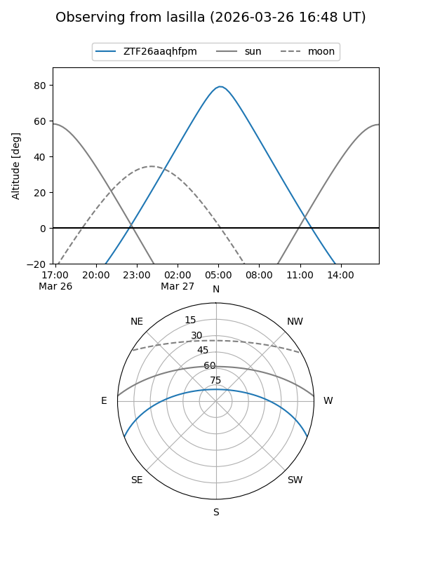
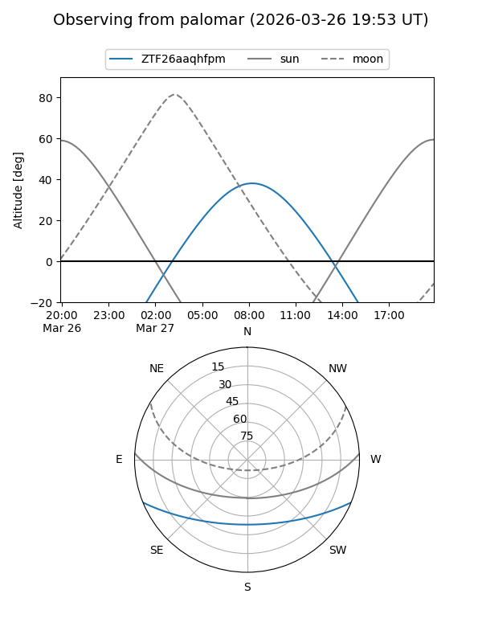

ZTF26aaqhfpm
Target ZTF26aaqhfpm at 2026-03-27 09:12
Aliases and brokers:
FINK: link
Lasair: link
ALeRCE: link
alt names
ZTF26aaqhfpm (ztf,fink_ztf)
Coordinates:
equatorial (ra, dec) = 190.7945,-18.37118
equatorial (HMS+DMS) = 12:43:10.69,-18:22:16.27
galactic (l, b) = (300.1859,+44.45652)
Flags:
Photometry:
last ztfg=17.32
1 ztfg detections
Lightcurve
Visibility


Additional plots